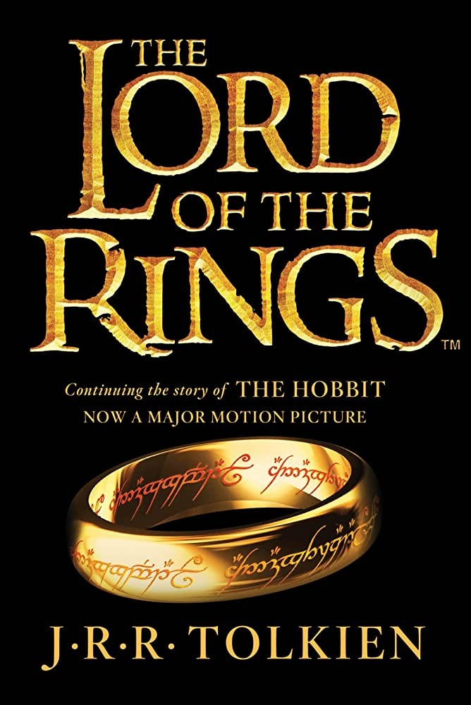

I played a lot of soccer this year. In fall I played rec and then joined the school team for winter. I think I improved a lot throughout the year and had a lot of fun playing with my teammates.
I read the Lord of the Rings series this year and it was really interesting. I was impressed that J.R.R Tolkien, the author of the series, was able to create such a convincing world just through imagination. It felt like it really existed. I also learned about another book he wrote called the Silmarillion where he explains the whole history of the world in the book.